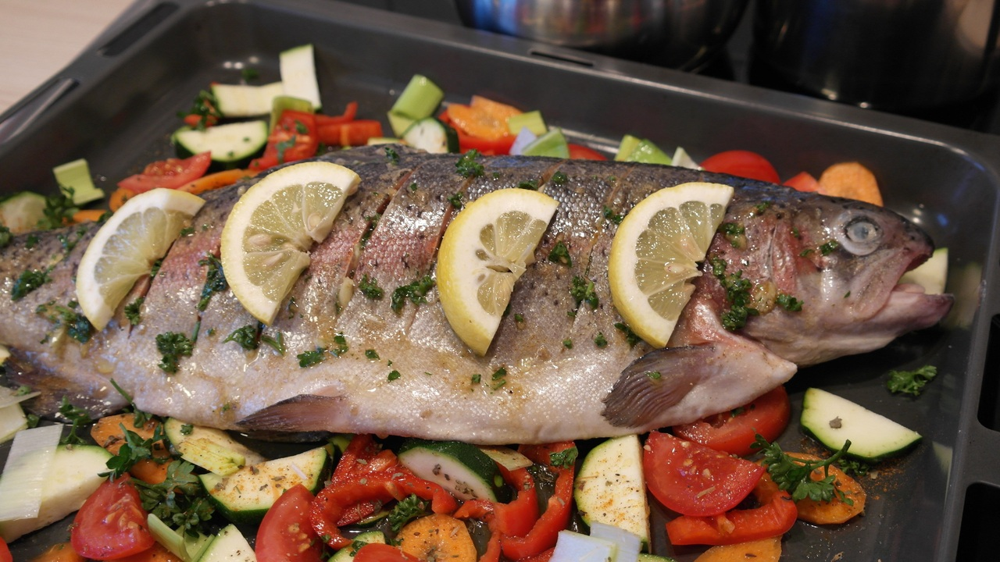

Home
Psari plaki (baked fish) with roasted lemon, oregano and feta potatoes

Description
This Greek-style dish of baked fish in tomatoes and olives is served with perfectly crispy potato wedges on the side.
Ingredients
- 5tbsp olive oil.
- 2 red onions, thinly sliced.
- 4 garlic cloves, thinly sliced.
- 2tsp dried oregano.
- 1/2tsp aleppo pepper.
- 400g tin whole plum tomatoes/passata.
- 1/2 bunch fresh flat-leaf parsley, finely chopped.
- 2tbsp capers.
- 60g pitted black olives, roughly chopped.
- 600g white fish, such as cod or haddock.
- 1/2tsp ground cumin.
- 1 lemon.
- Sea salt and freshly ground black pepper.
Steps
- Preheat the oven to 200C/180C Fan/Gas 6.
- To make the psari plaki, place a large flameproof frying pan or shallow flameproof casserole on a medium-low heat and add the olive oil, onions and garlic. Season well with salt and sauté for 10 minutes so they start to soften.
- Stir in 1½ teaspoons of dried oregano and all the Aleppo pepper, followed by the tinned tomatoes and 100ml/3½fl oz of water. Break the tomatoes up with a spoon and bring everything to the boil.
- Reduce the heat and simmer for 15 minutes until thickened.
- Stir in most of the flat-leaf parsley, along with all the capers. Add the black olives.
- If your fish is in one piece, cut into four equal portions. Pat the fish dry using kitchen paper and place in a non-reactive bowl or dish. Season it well with salt and pepper and sprinkle with the cumin and remaining ½ teaspoon of oregano.
- Squeeze over the juice of half a lemon and toss it all together.
- Nestle the fish in the tomato sauce and place the pan in the oven and bake for about 20 – 25 minutes at the same temperature as the potatoes.
- Finish by squeezing the remaining lemon half over the psari plaki and sprinkling over the remaining chopped parsley.
Suitable for freezing.